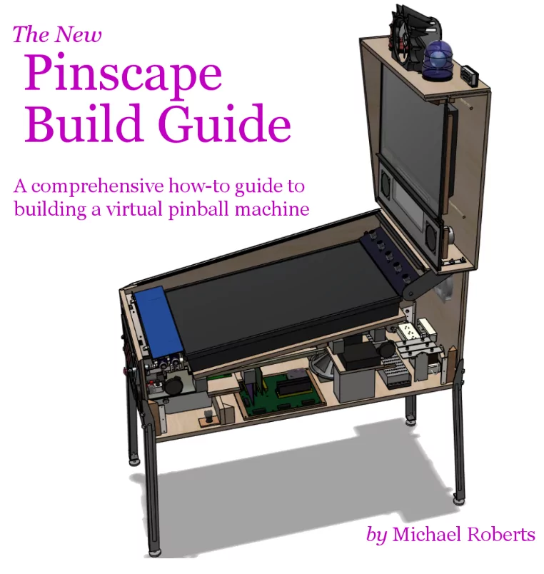
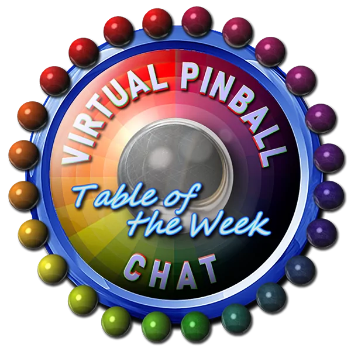
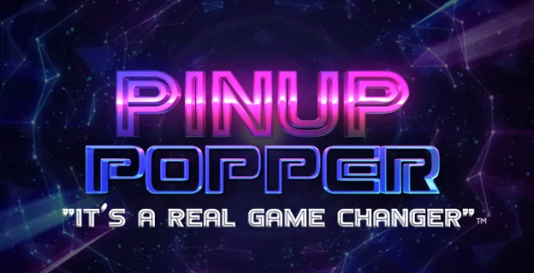
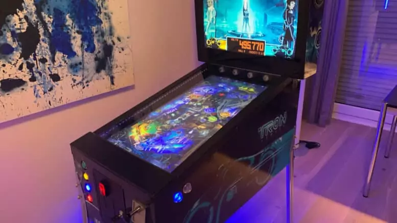

Build a Virtual Pinball Cabinet
Now is the best time to build your own VPIN!
Welcome to our collection of vpin build resources. A Virtual Pinball Table is a piece of art, and no two vpin cabs are the exact same. There's a lot of things that go into building and maintaining a vpin cab, and there are multiple ways to go about putting one together, not to mention all of the different toys that are available to make a cab sing and dance.
That's why we've put together this growing list of written and video guides as well as online communities that many of us have made good use of when we make our own vpin. Check out the great resources below, and please thank the authors and support their channels!

Start here 'Read the VPin Bible'
Commonly referred to as "The Pinball Bible", Mjrnet's Build Guide is designed to be a full How-To manual for building a virtual pin cab, covering everything from the physical cabinet to software and solenoids.

Research & Ask Questions
Now that you've read through Mjrnet's Vpin bible, you likely have questions. The Virtual Pinball Chat Discord is filled with vpin experts ready to help you on your journey.

One software to rule them all
A large part of building a virtual pinball cabinet is the software. Thanks to Nailbuster, his Pinup Popper software and baller installer are a true game changer.
Check out these video guides
Complete Cabinet Build
by Way of the Wrench
In this detailed video series, Way of the Wrench guides you through the process of building a virtual pinball cabinet!
Virtual Pinball Guides
with Major Frenchy
Making Tutorials and testing Hardware/Software for you. Owner of Virtual Pinball Chat Discord.
How to build a VPIN Cab
with Ty Christian
Recorded at the Midwest Gaming Classic, Ty tells you step-by-step how to create your own virtual pinball table! He also tells you what not to do.
32" Cabinet Build Guide
by VIRTUAL-PINBALL-CABINET.COM

This detailed build guide shows you how to customize the size of the cab to be 32" with a custom playfield mount, lock bar and back box. A great solution for those of us who don't have the room for a full size vpin!